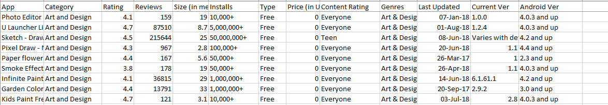

Huawei-Google Play Data Visualization
This is a Refocus Task. I was a data analyst working at Huawei, specifically in the AppGallery vertical. My manager has an important business review coming up soon and is tying a presentation together. He wanted me to make a report in Power BI out of Google’s Play Store dataset (which is sent to me via email). He’s looking to use this report during his business review to find and talk through competitor insights together with the leadership team that’s attending.
Power BI Dashboard
This dashboard presents key metrics, including the total number of apps, total number of installs, the average review rating, and the total number of installs from free and paid apps separately. These metrics are displayed in number cards that dynamically adjust as users interact with the other graphs and filters. The graphs goes deeper into the analysis by showcasing details about reviews, rating, price, and apps by app size. Additionally, a timeline shows the total number of apps last updated over the period of analysis, which can be further filtered by date slicer.
Methodology
Dataset Review
Upon reviewing the dataset in Excel, I have determined the necessary metrics for the analysis. Utilizing the "app" column, I generated a "AppCount" metric, while the last update dates will form the basis of a timeseries graph. In order to focus solely on the information related to installs, reviews, and price, I excluded irrelevant columns such as "Current Version" and "Andrioid Version". Additionally, I have identified somee filters to be incorporated into the dashboard, including "App" and "Category" selection option, "Free" and "Paid" selection option, and, finally, a Date filter.
Data Processing
.png)
From there, the dataset was imported into Power BI and was transformed for data processing or cleaning. This includes simple tasks such as removing duplicates, removing unnecessary columns, replacing blank values as "No Data", and creating buckets.
Data Modeling
For data modeling, a dimension table was created solely for the timeseries. These tables were connected by "Last Updated" from the Fact table and "Date" from the newly made Dim Table.
Dashboard Design
Below shows the visual elements in Power BI and the fields assigned to them.